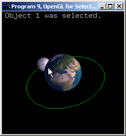
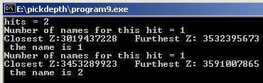

urce source source source source source source source source source source |
[program
nine]
This example will show you how to setup and use the selection
buffer. There are many example programs already on the internet for
this. Most of them don't handle overlapping objects too well - some are
just plain wrong. It's all in the parsing of the results, see?
Left click on the Earth and Moon to report 'hits'. Try clicking on them
when they are partly obscured or completely hidden. The program will
always return the closest 'hit' to the viewer.
Right click and drag the mouse to change the angle of view of the planets.
The screengrab on the right shows a typical hit record from the program.
The first line tells us how many hits were recorded (IE how objects were under
the mouse pointer). The next three lines tell us the statistics of each
one hit, the number of names (it'll always be one - don't worry about that), the
near and far Z values and the GLuint 'name' of the object. Object '1' is
the Earth. The next record if for the moon, notice it has been named
"2"..
|
 |
 |
We name our textures with lines 1-3 as always. Line 4 declares the array where we'll store the texture names. Lines 6 and 7 define two names for our planets. Note that 1 corresponds to the Earth and 2 to the moon
[1]
#define MAX_NUM_TEXTURES 2
[2] #define EARTH_TEXTURE 0
[3] #define MOON_TEXTURE 1
[4] GLuint texture_names [MAX_NUM_TEXTURES];
[5]
[6] #define EARTH 1
[7] #define MOON 2
We also need to store the aspect ratio of the viewport, so a float will do the job...
[1] float aspect_ratio;
Next we create a string that will hold our nice, parsed hit report message so we can display this with glut.
[1]
char str[256];
The function "OutputString" does just that. It uses glutBitmapCharacters to draw text to a specific location on the screen. Note that the mapping of coordinates for your text could vary. It's up to you how you setup up your 2 dimensional projection...
[1]
void OutputString ( float x, float y, char *string )
[2] {
[3] int length;
[4]
[5] length = strlen ( string );
[6] glRasterPos2f ( x, y );
[7] for (int i = 0; i < length; i++ )
[8] glutBitmapCharacter ( GLUT_BITMAP_9_BY_15, string[i] );
[9] }
The next
function - "void
init ( void )" does
our standard opengl initialisation. We've set up the lighting and loaded
textures hundred of times before.
The function "void
draw_orbit_line ( float radius )"
draws a circle with its circumference in the path of the moons orbit. It's
pretty self explanatory. We start a GL_LINE_LOOP and use a for loop to
define a bunch of points around a circle. Notice how we disable, then
re-enable lighting and texturing.
Ideally we'd compile this orbit line to display list so it doesn't need recalculating every frame. The [milkshape object loader] code shows you how to this easily.
[1] void draw_orbit_line (
float radius )
[2] {
[3] float angle;
[4]
[5] glDisable ( GL_LIGHTING );
[6] glDisable ( GL_TEXTURE_2D );
[7]
[9] glPushMatrix ( );
[10] glRotatef ( 90.0, 1.0, 0.0, 0.0 );
[11] glBegin ( GL_LINE_LOOP );
[12] glColor3f ( 0.0, 0.6, 0.0 );
[13] for ( int i = 0; i <= 24; i++ )
[14] {
[15] angle = 3.14159 / 12.0 * i;
[16] glVertex2f ( ( radius*cos ( angle )), ( radius*sin ( angle )) );
[17] }
[18] glEnd ( );
[19] glPopMatrix ( );
[20]
[21] glEnable ( GL_LIGHTING );
[22] glEnable ( GL_TEXTURE_2D );
[23] }
"void
draw_sphere ( int tex_id, float size )"
draws a sphere with a given size and texture_id, you've seen this before, so I
won't detail it here.
"void draw_planets ( GLenum mode )" positions and draws our
planets. Loading names onto the selection name stack if required.
The first 7 lines setup the viewing transformation.
[1]
void draw_planets ( GLenum mode )
[2] {
[3] glPushMatrix ( );
[4] glLightfv ( GL_LIGHT0,GL_POSITION,light_pos );
[5] glTranslatef ( 0.0, 0.0, -4.0 );
[6] glRotatef ( view_angle1, 0.0, 1.0, 0.0 );
[7] glRotatef ( view_angle2, 1.0, 0.0, 0.0 );
Line 8 checks to see if we should be loading the names onto the name stack. Line 9 actually loads the name and line 10 draws the sphere.
[8] if (
mode == GL_SELECT )
[9] glLoadName( EARTH );
[10] draw_sphere ( EARTH_TEXTURE, 1.0 );
Line 11 draws the orbit lines. Notice that we don't load a name directly before, so the drawing of the orbit lines won't be included on the name stack.
[11] draw_orbit_line ( 2.0 );
Lines 12 and 13 transform the current matrix, so when we draw the moon it'll appear as though it is orbiting the Earth.
[12] glRotatef ( angle, 0.0, 1.0, 0.0 );
[13] glTranslatef ( 0.0, 0.0, 2.0 );
14 to 16 do the same as above. We load the name of the planet only if we specify GL_SELECT mode.
[14] if ( mode == GL_SELECT )
[15] glLoadName( MOON );
[16] draw_sphere ( MOON_TEXTURE, 0.5 );
[17] ...
"draw_2d_stuff" changes the projection mode so we can render things squarely to the screen. If we draw our '2d stuff' after the 3d and disable depth buffering it'll act as an a overlay. So we disable the lighting and texturing.
[1]
void draw_2d_stuff ( void )
[2] {
[3] glDisable ( GL_LIGHTING );
[4] glDisable ( GL_TEXTURE_2D );
We switch to the GL_PROJECTION matrix. We push a new matrix and create a blank one (by calling glLoadIdentity). The call to glOrtho creates a projection matrix that has no perspective. Notice how this projection has no depth. Read the manual specs. for full details.
[5]
glMatrixMode ( GL_PROJECTION );
[6] glPushMatrix ( );
[7] glLoadIdentity ( );
[8]
[9] glOrtho ( 0.0, ( (double)ScreenWidth ), 0.0,
( (double)ScreenHeight ), -0.0, 0.0 );
Next we change back the the modelview matrix set the colour for the font drawing and call OutputString, the coordinates put the text in the top left corner of the viewport.
[11]
glMatrixMode ( GL_MODELVIEW );
[12] glLoadIdentity ( );
[13] glColor3ub ( 200, 200, 200
);
[14] OutputString ( -0.95, 0.90, str );
The remaining lines put back everything we've been messing around with. Our 'normal' perspective projection matrix is returned and we re-enable the lights and texturing.
[15]
glMatrixMode ( GL_PROJECTION );
[16] glPopMatrix ( );
[17]
[18] glMatrixMode ( GL_MODELVIEW );
[19]
[20] glEnable ( GL_LIGHTING );
[21] glEnable ( GL_TEXTURE_2D );
[22] }
The function "process_hits" parses the results from the selection buffer. Parsing can be messy, but the following isn't too hard to follow.
The struct from lines 3 to 6 called log_me (sorry about the name) will hold the closest depth value of a hit and the object name that the hit was related to.
[1] void process_hits ( GLint hits, GLuint buffer[] )
[2] {
[3] struct {
[4] GLuint z1;
[5] GLuint current_name;
[6] } log_me;
Line 7 declares two looping variables for later on. Line 8 declares two pointers with which we'll be traversing the buffer later on. Line 10 initialises the closest depth value in log_me to a huge number - this is so we can test against it later.
[7]
unsigned int i, j;
[8] GLuint names, *ptr, *tptr;
[9]
[10] log_me.z1 =
99999999999999999999999999999999999;
Line 11 prints the number of hits that occurred to the console. Lines 13 and 14 assign the pointers as indices the to buffer. We'll use these later to get at data in the buffer more easily.
[11]
printf ( "hits = %d\n", hits );
[12]
[13] ptr = (GLuint *) buffer;
[14] tptr = (GLuint *) buffer;
For every hit recorded we print the number of names returned with line 18 (it'll always be one for general purposes). Then we increment the pointer to the next position in the buffer
[15]
for ( i = 0; i < hits; i++ )
[16] {
[17] names = *ptr;
[18] printf ( "Number of names for this hit = %d\n", names );
[19] ptr++;
The next buffer position holds the closest depth value for the hit. We display this with line 20. Line 21 checks in this value is lowest than our recorded lowest in log_me. If it is, we update log_me with the new lowest and use the temporary pointer to look ahead two positions in the buffer and retrieve the name of the object.
[20]
printf ( "Closest Z: %u", *ptr );
[21]
[22] if (*ptr < log_me.z1 )
[23] {
[24]
log_me.z1 = *ptr;
[25]
tptr = ptr + 2;
[26]
log_me.current_name =
*tptr;
[27] }
Next we inc the pointer and print the next value, the furthest depth value. (Remember that just because one object has a greater depth value than another that doesn't necessarily mean it's further from the viewer.) After this we increment the pointer again and loop through all the names for this hit - again, in this example there will always be one name per hit, but it's better to check.
[28]
ptr++;
[29] printf ( " Furthest Z: %u\n", *ptr );
[30] ptr++;
[31]
[32] printf ( " the name is " );
[33] for ( j = 0; j < names; j++ )
[34] {
[35]
printf (
"%d ", *ptr );
[36]
ptr++;
[37] }
[38] printf ( "\n" );
[39] }
Line 40 checks if we had one or more hits and changes our global 'report' string. Line 41 copies the nice message into the string variable. Line 43 handles the string when we have no hits. Remember that the code to output these strings is called every redraw in the "draw_2d_stuff ( )" function
[40]
if ( hits >= 1 )
[41] sprintf ( str, "Object %u was selected.", log_me.current_name );
[42]
[43] if ( hits == 0 )
[44] sprintf ( str, "No object was selected." );
[45]
[46] }
Phew! That was pretty deep.
When the left mouse button is clicked we call "pick_planets" the coordinates of the click are passed into here.
[1] #define BUFSIZE 512
[2] void pick_planets ( int x, int y )
[3] {
[4] GLuint selectBuf[BUFSIZE];
[5] GLint hits;
[6] GLint viewport[4];
We get the dimensions of the viewport...
[7] glGetIntegerv ( GL_VIEWPORT, viewport );
Then we tell OpenGL where to find the selection buffer and enter GL_SELECT rendering mode.
[8] glSelectBuffer ( BUFSIZE, selectBuf );
[9] glRenderMode ( GL_SELECT
);
We clear all the names on the namestack and push on a 'blank' name.
[10] glInitNames (
);
[11] glPushName ( 0 );
Next we switch to the projection matrix, save a copy of it and clear it.
[12] glMatrixMode ( GL_PROJECTION );
[13] glPushMatrix ( );
[14] glLoadIdentity ( );
We use a call to gluPickMatrix to
create a projection matrix based on the window coordinates (Note that GLUT has
oposite vertical scaling - hence we subtract 'y' from the height of the viewport.
Imagine that we have created a little cube where you clicked your mouse and its
2 by 2 by 2 pixels in size.
[15] gluPickMatrix ( (GLdouble)x, (GLdouble)( viewport[3] - y ),
2.0, 2.0, viewport );
We apply the same perspective projection to our 'selection cube' to ensure that we pick what we click.
[16] gluPerspective ( 80.0, aspect_ratio, 1.0, 200.0 );
We switch back to the modelview matrix and draw our planets again, this time specifying that we wish to load names for our objects onto the name stack.
[17] glMatrixMode ( GL_MODELVIEW );
[18] draw_planets ( GL_SELECT );
Drawing these planets off screen isn't double buffered so we call glFlush to ensure OpenGL has finished before we move on.
[19] glFlush ( );
Next we collect the number of hits that occurred. OpenGL has finished rendering the scene again, this time the portion of the scene your pick cube has selected is what has been rendered. If you comment out line 9 selection won't work, but you'll see what OpenGL draws to determine which object has been selected.
[20] hits = glRenderMode ( GL_RENDER );
[21] process_hits ( hits, selectBuf );
The remaining lines restore the proper modelview and projection matrices.
[22] glMatrixMode ( GL_PROJECTION );
[23] glPopMatrix ( );
[24]
[25] glMatrixMode ( GL_MODELVIEW );
[26] }
The remaining functions deal with mouse clicking and dragging, as well as setting up the GLUT callbacks. We've seen these before...
Website and content, Paul Groves